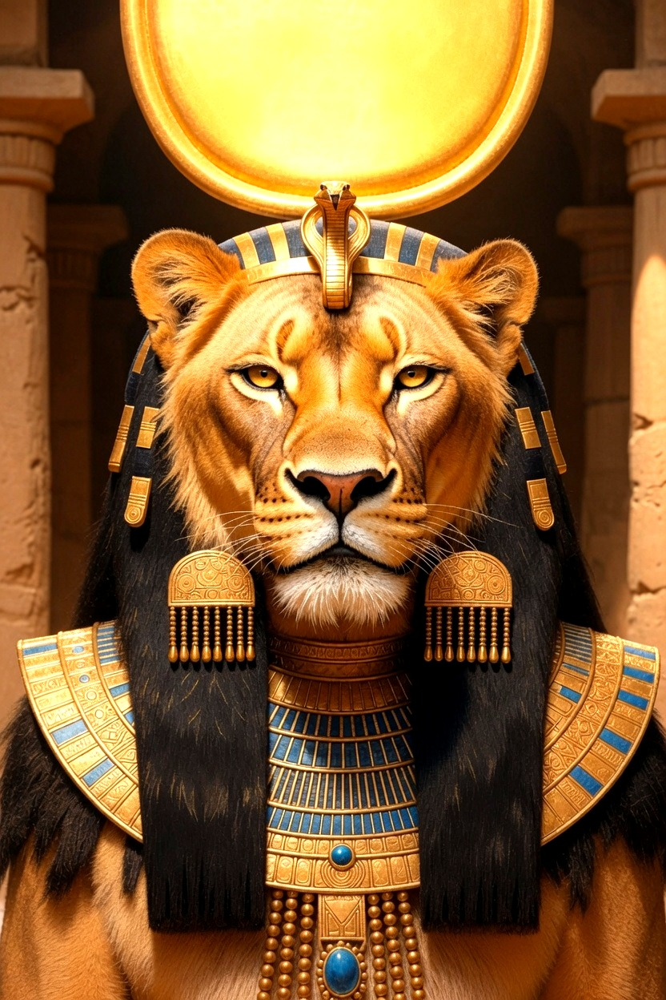

Axis 01
Power, not a narrow portfolio
“War goddess” and “healing goddess” are useful labels, but her deeper identity is concentrated divine effectiveness.
Ancient Egypt · Source-critical research
Power, Plague, Protection, and Healing
The lioness goddess across myth, ritual, kingship, medicine, and material culture — a research dossier made readable, with confidence levels and the full lore.
Power made present · Danger brought into order

Orientation
Sekhmet is dangerous solar power made present and governable: the force that can destroy enemies or send disease, and the same force that can protect, avert harm, and restore life when pacified within maat.
Axis 01
“War goddess” and “healing goddess” are useful labels, but her deeper identity is concentrated divine effectiveness.
Axis 02
Sekhmet overlaps with Hathor, Tefnut, Mut, Bastet, and other goddesses without becoming permanently identical to them.
Axis 03
The controller of dangerous arrows and messengers is uniquely able to restrain or redirect them.
Axis 04
Amenhotep III’s corpus is secure; the elegant 730-statue calendar remains a contested reconstruction.
Multiple direct sources or secure objects.
Strong interpretation with alternatives.
Popular or plausible, but not decisively proven.
Sekhmet embodies power at the threshold between protection and catastrophe. Ancient ritual seeks not to make her harmless, but to make her force present, directed, and pacified within maat — right order.
Chapter 03
sḫmt — “the Powerful One.” A name that identifies a mode of action, not a narrow job title.
The Egyptian name conventionally written Sekhmet is transliterated sḫmt. It is grammatically feminine and derives from sḫm, a word-field involving power, might, authority, and effectiveness. Because Egyptian script normally omitted vowels, her exact ancient pronunciation cannot be recovered with certainty.
In Egyptian thought, naming a divine force identifies a mode of action. Sekhmet is power made personal and ritually addressable. The same name can support both threatening and beneficent titles without inconsistency.
She is securely attested by the late Old Kingdom in the Pyramid Texts. Early references show a powerful lioness goddess already within royal funerary theology — they do not justify reading every later myth back into the third millennium BCE. The record becomes dramatically richer in the New Kingdom, especially under Amenhotep III.
The Powerful One, a lioness deity and form of the solar Eye.
Royal protector and model of destructive force directed against enemies.
Commander and restrainer of dangerous agents, invoked in prevention and healing.
Volatile radiance whose pacification restores order, fertility, and life.
Chapter 04
Recurrent attributes — not a single fixed costume. Inscription and context decide.
Chapter 05
Relationships are local, historical, and situational. “Sekhmet is X” is often true in a particular temple, period, or ritual — it does not make every other identity false.
Daughter / manifestation
Solar source of her radiance and agency.
Occupies the role
Radiance, agency, defender, and capacity to act beyond the sun god.
Syncretic overlap
Especially at Thebes and the Mut precinct of Karnak.
Eye / return goddess
Often named in the red-beer destruction narrative.
Distant lioness
Departs south and returns with moisture and renewal.
Related feline deity
Overlaps, but not simply Sekhmet’s gentle half.
Local family theology
Memphite triad: creative craft, power, and rejuvenation.
Chapter 06 · Lore
Ritual narratives that explain recurring problems — how divine violence begins, exceeds its target, is pacified, and is made productive again.

The red-beer myth · Book of the Heavenly Cow
Humanity rebels against the aging sun god Ra. He sends his Eye to punish the rebels. The goddess slaughters humans in the desert, and her violence threatens to continue beyond the intended punishment. Ra orders beer colored red with mineral pigment poured over the fields. She drinks, becomes intoxicated, and ceases the slaughter.

Departure, return, and renewal
The solar Eye becomes angry, leaves Egypt for the southern deserts or Nubia, and takes the form of a dangerous lioness. A male god — often Thoth, Shu, or Onuris — is sent to persuade or compel her return. Homecoming brings joy, music, dance, intoxication, Nile renewal, and restored divine order.
Chapter 07
One power, two outcomes. Violence and medicine are not opposites — both depend on who controls directed divine force.
Solar force
Heat, radiance, royal energy
Danger released
Wrath, arrows, messengers, epidemic
Life restored
Protection, breath, vitality, healing
Ancient logic
A god who can send harm is also uniquely able to restrain it. Protective ritual recruits, redirects, and pacifies the same force.
Modern trap
Calling her “destructive but also healing” sounds paradoxical only because modern categories separate warfare, epidemic, medicine, and religion more sharply than Egyptian ritual did.
Maat — Directed power in right relationship
via Names, offerings, drink, lustration, hymns
Battle inscriptions compare the king to Sekhmet in rage. Royal violence becomes cosmological: order against rebellion and chaos. She is a divine model and weapon of kingship — not a modern “patron saint of soldiers.”
Destructive action is expressed as heat, fiery breath, glare, and projectiles. Breath can be lethal or life-giving. The goddess who withdraws breath can also restore it — bridging warfare, epidemic, and healing.
Protective texts describe dangerous beings as messengers or arrows of Sekhmet. The “Seven Arrows” are personified agents of harm, often tied to epidemic danger and the risky new-year threshold. Seven expresses completeness and intensified potency.
The authority that controls affliction is best able to remove it. Appeasing Sekhmet converts uncontrolled force into ordered defense. Healing is mastery of dangerous power — not bedside gentleness.
Wab-priests of Sekhmet participated in ritual protection and healing. Some combined priestly, magical, and medical expertise. Yet swnw (“physician”) remained a distinct title. Overlap is real; a simple equation is not.
The last days of the old year and opening of the new year could be especially dangerous. Rites addressing Sekhmet and her arrows sought to make the year safe before danger entered the body or household — preventive ritual, not only treatment after symptoms.
Chapter 08
Ancient Egyptian gods were not standardized across the country. Provenance is part of the meaning of every Sekhmet object.
Principal cult center in most synthetic accounts. Local family theology with Ptah and Nefertem. Textual prominence exceeds the surviving architectural record.
Extensive Sekhmet statuary and Mut-Sekhmet overlap. The sacred lake Isheru formed part of a ritual landscape integrating dangerous and maternal aspects of the Eye.
Amenhotep III’s mortuary temple (Colossi of Memnon site). A major context for Sekhmet statuary connecting jubilee, solar power, and temple ritual.
Important for feline and lion-god traditions; illuminate Sekhmet by comparison without being identical cults.
Preserve elaborate Eye-of-Ra and Distant Goddess theology. Comparative geography only works when local identity remains visible.
Chapter 09
Hundreds of statues survive or are recorded. The famous exact totals are reconstructions — not a surviving ancient inventory.
Amenhotep III (14th century BCE) commissioned an unparalleled program of seated and standing Sekhmet statues, many in dark granodiorite. Epithets and formulae vary: repetition multiplies presence; variation organizes it.
A famous reconstruction proposes 365 seated and 365 standing statues — one pair per day. Plausible, but no complete ancient inventory confirms the exact total. Label the exact 730 contested, not fact.
Calendar or litany of invocation; Sed-festival and solar kingship; healing and epidemic protection; a controlled ritual landscape of divine force. No single explanation excludes the others.
Theology enacted through scale and seriality. A single museum statue looks self-contained, but it may have belonged to a dense chorus whose collective effect was the point.
Chapter 10
Pacifying a dangerous goddess means bringing her into a favorable state — not defeating her.
Purification, incense, libation, food, clothing, hymns, and presentation of maat maintained reciprocal relationship with divine presence.
Not defeating her — bringing her into a favorable state through praise, offering, music, cooling, drink, and correct names. Power remains available but ceases to strike the community.
Five extra days at the end of the 360-day year were ritually charged and often dangerous. Amulets and rites sought to block the arrows of Sekhmet before they entered the year.
Festivals associated with Hathor and Mut reenacted pacification and return of the solar Eye. Sekhmet belongs to this complex through her Eye identity; local festival names vary.
Correct speech: naming hostile beings, recounting mythic precedent, identifying the patient with a protected god. Sekhmet could be invoked against her own emissaries.
No reliable evidence that regular cult required human sacrifice. Mythic slaughter and royal enemy scenes are not cultic killing records. Normal offerings: food, beer, wine, incense, oils, textiles.
Chapter 11
Dates approximate. Do not read late temple detail backward as verbatim Old Kingdom doctrine.
c. 24th–22nd c. BCE
Pyramid Texts establish antiquity. Formulaic royal funerary theology; not yet the full later profile.
c. 2055–1650 BCE
Coffin Texts broaden protective divine powers. Continuity and development, not a single “invention” of healing.
c. 1550–1070 BCE
Richest combination of ideology, art, and myth. Amenhotep III’s statues dominate Theban landscape.
13th–12th c. BCE
Book of the Heavenly Cow preserves destruction-and-pacification narrative. King compared to raging lioness power.
664–332 BCE
Systematized temple scholarship, amulets, bronzes. Syncretism as productive theological method.
332 BCE–c. 4th c. CE
Detailed Eye and Distant Goddess liturgies. Late but invaluable; not verbatim Old Kingdom belief. Modern devotion is revival, not unbroken priesthood.
Chapter 12
Never identify a lioness head and then supply a generic biography from a handbook.
01
Provenance — where excavated, and is the findspot secure?
02
Date — which reign or period do style and inscription support?
03
Material and scale — monumental hard stone, small bronze, faience?
04
Form — lioness-headed woman, full lioness, seated, standing, composite?
05
Regalia — solar disk, uraeus, crowns, ankh, papyrus scepter?
06
Inscription — which names, epithets, places, and royal patrons?
07
Object history — moved, reused, recut, damaged, restored, collected without documentation?
Appendix A
Popular claims ranked by source-critical confidence.
Sekhmet means “the Powerful One.”
High confidenceEgyptian sḫmt derives from the word-field of power or might.
She is a lioness-headed daughter of Ra.
High confidenceCentral iconographic and theological identity; “daughter” is not modern biological genealogy.
She is wife of Ptah and mother of Nefertem.
ModerateStrong local Memphite family arrangement, especially in later synthesis — not universal.
She is the goddess in the red-beer destruction myth.
ModerateDestructive solar Eye commonly identified with Sekhmet; best-known narrative names Hathor in key passages.
The beer was dyed with pomegranate juice.
UnsupportedAncient text emphasizes beer colored red with a mineral pigment. Pomegranate is modern embellishment.
Amenhotep III made exactly 365 or 730 statues.
ContestedHundreds are known; exact totals are reconstructions, not demonstrated inventories.
The statues were made only to stop a plague.
ContestedHealing may be relevant, but jubilee, solar kingship, calendar, and ritual landscape are also plausible.
Priests of Sekhmet were physicians.
ModerateSome were ritual-medical specialists; swnw physicians remained a distinct title, with overlap possible.
Bastet is Sekhmet’s gentle side.
OversimplifiedThe goddesses overlap, but both have protective and dangerous forms and distinct local histories.
Sekhmet was evil until she became a healer.
UnsupportedDestruction and healing are coordinated outcomes of one power, not a moral conversion.
Her cult practiced human sacrifice.
UnsupportedMythic slaughter and royal enemy scenes are not evidence of routine human sacrifice.
Modern Sekhmet worship continues the ancient priesthood.
UnsupportedModern devotion is revival and reinterpretation after a long institutional break.
Appendix C
Bibliography
Concise definition
Sekhmet is an ancient Egyptian lioness goddess whose name means “the Powerful One.” As a major form of the Eye of Ra, she personifies dangerous solar and royal force — the power to destroy enemies and send disease, but also to avert harm, protect the king and community, and restore life when that force is pacified within cosmic order.